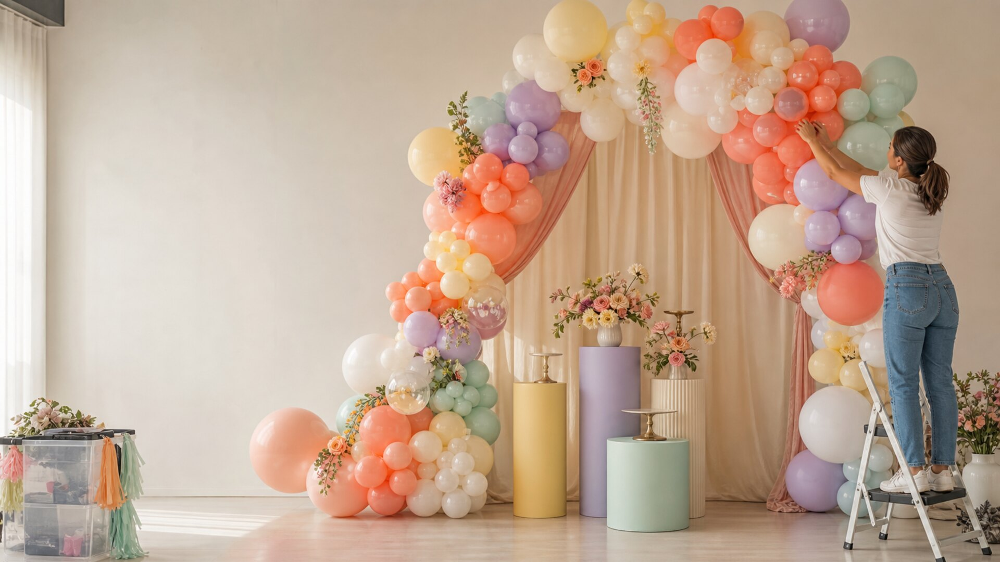

balloon-backdrop-gallery
PopArc Party Styling

Works: Lead with a joyful backdrop image, show packages by scale, include setup/teardown proof, and ask for date, venue, and color notes. should separate this from nearby patterns.
Proof: stylist installing a colorful balloon garland and party backdrop in an event space. carries the niche-specific read.
Watch: compare gallery-led neighbors for hero geometry, CTA rhythm, and proof treatment.
Fix next: no mechanical visual-sweep failures; judge taste from first viewport screenshots.
Nearest structural neighbors
- headshot-brand-photography286
- pet-portrait-photography286
- dessert-table-bakery-catering289